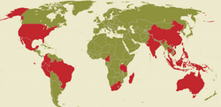

在过去的5个世纪内，约有900种动植物从地球消失（它们至少不会在地球这个星球上生存下去了）。而濒临消亡的物种现在超过10000种。
上面的图表显示的是全球濒危物种最多的几个国家，在这些国家里，自然环境在工业发展下急剧变化，明显影响到物种的生存。每个图标代表10个物种，统计类别包括哺乳动物，鸟类，爬行动物，两栖动物，鱼类和软体动物。这里列举的只是即将要灭绝的物种数目最多的20个国家，注意到欧洲国家没有列选，这并不代表那里不存在濒危物种，只是程度和数量不同而已，欧洲国家里濒危物种数最多的是西班牙。
另外，自从人类入住夏威夷岛以来，约有71种鸟类灭绝。南极洲上有约17种企鹅消亡，12种数量急剧下降。
在濒危植物方面，厄瓜多尔同样高居第一，这个亚马逊流域的国家濒危植物种数超过其他任何一个两倍。过去500年内，114种植物消亡。
每年金枪鱼捕鱼产业的GDP是72亿美元，所带来的结果是自1980年以来，金枪鱼数减少了70%。专家预计它们10年内将从地球上消失。万兽之王老虎也不容乐观，全球目前仅剩3200头老虎，20世纪里，它们的数量锐减97%。
以上统计数据来自国际自然保护联盟（IUCN）2009年的发布的濒危物种红名单，和世界野生动物基金2009年发布的鸟类生存状态等。